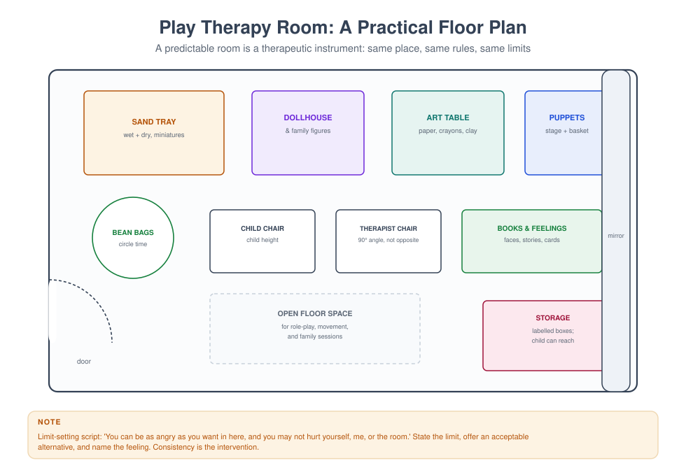

MFT 727 — Play Therapy Techniques
Course leader's summary. Play is the child's language and the therapist's instrument. This course trains you to set up a room, hold a session, use directed and non-directed methods, involve parents as partners, and recognise when play is not enough.
How to use this book
Play therapy is learned in a room, not in a book — but a badly equipped room produces bad therapy. Work through the weeks in order: room, stance, skills, methods, family application, limits. Practise every technique on a peer before you use it with a child.
1. Course description
The course covers the history and theory of play therapy; the child-centred (non-directive) model and its core skills; directive and cognitive-behavioural play; sandtray; art and puppetry; filial therapy (teaching parents to be therapeutic agents); family play therapy; assessment through play; trauma and play; and the evidence base.
2. Learning outcomes
| # | Outcome | Assessed |
|---|---|---|
| LO1 | Explain the theory and evidence for play therapy | Exam |
| LO2 | Set up a safe, well-equipped playroom | Room plan and rationale |
| LO3 | Conduct a non-directive session using core skills | Observed session |
| LO4 | Use at least three directive techniques appropriately | Skills portfolio |
| LO5 | Teach parents filial skills | Parent session observed |
| LO6 | Assess through play without over-interpreting | Case study |
| LO7 | Recognise limits and refer | Viva |
3. Assessment
| Component | Weight | Due |
|---|---|---|
| Playroom plan with item rationale (1,200 words) | 15% | Week 4 |
| Observed non-directive session (30 min) | 30% | Week 7 |
| Techniques portfolio (five techniques, with reflection) | 20% | Week 10 |
| Case study including filial work (2,500 words) | 25% | Week 13 |
| Examination | 10% | Week 14 |
4. The fourteen-week plan
| Week | Topic | Practical |
|---|---|---|
| 1 | What play is for; history and theory | Free play observation |
| 2 | The therapeutic powers of play | Session structure mapping |
| 3 | The room and the toys | Room setup |
| 4 | Room plan due; limit setting | Limit-setting rehearsal |
| 5 | Non-directive skills I: tracking and reflecting | Tracking drill |
| 6 | Non-directive skills II: returning responsibility, esteem-building | Skills drill |
| 7 | Observed non-directive session | Assessed |
| 8 | Directive techniques: art, puppets, role-play, stories | Technique practice |
| 9 | Sandtray | Sandtray practice |
| 10 | Portfolio due; assessment through play | Assessment exercise |
| 11 | Trauma and play; dissociation in the playroom | Pacing and grounding |
| 12 | Filial therapy: parents as agents | Parent coaching |
| 13 | Case study due; family play therapy | Family session design |
| 14 | Limits, evidence and integration | Viva |
Week 1 — What play is for
Theory. Play is children's natural medium for expression, mastery, and meaning-making. Axline's eight principles (1947) remain the most quoted statement of the non-directive stance: the therapist develops a warm relationship; accepts the child as they are; establishes permissiveness; recognises and reflects feelings; respects the child's capacity to solve problems; does not direct; does not hurry; and sets only those limits that are necessary.
Why it works (proposed mechanisms). Play allows symbolic expression of experience that cannot be verbalised; it provides a sense of control and mastery; it allows rehearsal of difficult situations; and the relationship with the therapist provides a corrective relational experience.
Evidence. Play therapy has moderate support for a range of child problems, with stronger effects when parents are involved (filial therapy) and when the approach is matched to the problem (e.g. CBPT for anxiety). It is not a panacea, and it is not a substitute for trauma-specific treatment where indicated.
Week 2 — The therapeutic powers of play
| Power | What it looks like | How the therapist supports it |
|---|---|---|
| Communication | The child enacts the problem | Track and reflect |
| Emotional regulation | Repetitive calming play | Allow repetition; contain |
| Mastery | Replaying a frightening event with a different ending | Do not interpret; note the shift |
| Symbolic distance | The "monster" rather than the father | Stay in the metaphor |
| Relationship | The child tests and then trusts | Consistency, warmth, limits |
| Imagination | New possibilities | Follow, do not lead |
Session shape for a child. Opening ritual (same each time), free play, a focused activity, a closing ritual. Predictability is the intervention.
Week 3 — The room and the toys

Principles. Safety, predictability, accessibility, and privacy. The child should be able to reach what they need; the therapist should be able to see everything.
Toy categories (Landreth's classification).
- Real-life toys — dolls, family figures, cars, a cash register, a phone, cooking utensils.
- Acting-out/aggressive toys — toy soldiers, a punch bag, wild animals, a toy gun, dinosaurs.
- Creative/expressive toys — crayons, paint, clay, sand, blocks, musical instruments.
What to include. Sand tray, water, dolls and family figures, animal families, puppets, art materials, blocks, a dollhouse, a medical kit, a small house, blankets, and a soft toy.
What to avoid. Toys that require the therapist's help to operate; toys with one "right" answer; electronic toys that dominate; and anything that could be used to hurt without a limit.
Room rules posted at child height. "We stay in the room. We do not hurt ourselves. We do not hurt each other. We do not hurt the room. We put things away when we finish."
Week 4 — Limit setting
Why limits matter. Limits create safety, teach self-control, and protect the relationship. Permissiveness without limits is not acceptance; it is abandonment.
The ACT model (Landreth).
- A — Acknowledge the feeling: "You are really angry with me."
- C — Communicate the limit: "But I am not for hitting."
- T — Target an acceptable alternative: "You can hit the cushion, or you can tell me with words."
Sequence. State the limit calmly, once; repeat with the alternative; if it continues, offer a choice ("you can choose to put the toy down or I will put it away"); then follow through without anger.
What not to do. Negotiate; explain at length; threaten consequences you will not enforce; or shame the child.
Week 5 — Non-directive skills I
Tracking — narrating behaviour without evaluation: "You are putting the blue block on top. It wobbles."
Reflecting content — "You want the mother doll to go away."
Reflecting feeling — "You look pleased with that." / "That made you angry."
Rules of thumb.
- Describe, do not question.
- Name feelings tentatively ("you seem…"), allowing correction.
- Follow, do not lead.
- Stay in the metaphor; do not translate ("so the monster is your father" is an interpretation, not a reflection).
Week 6 — Non-directive skills II
Returning responsibility — handing the problem back: "That is something you can decide." / "You can try it."
Esteem-building — attributing effort and choice, not talent: "You kept trying until it stood up."
Facilitating self-direction — "You know what you want to do next."
Enlarging the meaning — offering a slightly wider frame: "You are the one who decides what happens in this story."
The therapist's own regulation. Children notice your body. Breathe slowly, sit at their level, keep your face open, and speak more slowly than you think you should.
Week 7 — Observed non-directive session
Thirty minutes with a trained child actor (or a filmed role-play marked against criteria). Assessed on: room and structure; tracking and reflection; returning responsibility; one limit set well; warmth; and the closing ritual.
Week 8 — Directive techniques
Directive play is not instruction. It is the deliberate use of a medium to address a specific issue, always following the child's lead within the structure.
| Technique | Use | How |
|---|---|---|
| Drawing (family, house, fears, "worst day") | Assessment and expression | "Draw your family doing something." Then ask them to tell you about it |
| Puppets | Safe displacement | Let the child choose a puppet; interview the puppet, not the child |
| Role-play | Rehearsal and mastery | "Show me what happens at the school gate" |
| Bibliotherapy | Normalising and skills | Read a story about a similar problem; discuss the character |
| Feelings cards / thermometer | Emotional vocabulary | Sort into "big/little", "now/then" |
| CBPT | Anxiety, trauma | Psychoeducation, coping skills, graded exposure in play |
Sequence for a directive activity. Explain briefly → demonstrate → let the child lead → observe → reflect → close.
Week 9 — Sandtray
What it is. A tray of dry and wet sand with miniature figures, used to create a world.
Two traditions. Non-directive (the child builds, the therapist witnesses and reflects) and directive (therapist suggests a theme, e.g. "make a world where you feel safe").
Practicalities. Trays with a water-resistant base; dry sand and water; a wide range of miniatures (people, animals, buildings, vehicles, natural objects, fantasy, symbols of spirituality); a camera to record the scene (with consent); and a clear policy about dismantling.
Interpretation discipline. Do not impose symbolic meanings. Ask: "Tell me about this world." "What happens next?" "Who is this?" The child is the authority on their world.
With older children and adults, sandtray can be used as a non-verbal way of representing a family system — who is placed near whom, what is buried, what is outside the tray.
Week 10 — Assessment through play
What you can learn. Developmental level (language, symbolic play, attention, motor control); emotional expression; themes (abandonment, violence, rescue, repetition); relational capacity (can they play with you?); and the impact of specific events.
What you cannot learn reliably. Specific causation; the identity of an abuser; or a diagnosis from a single drawing. Any assessment claim must be cautious and triangulated with other data.
Signs warranting attention. Play that is repetitive, narrowed and joyless; sexualised play beyond developmental norms; play involving harm to self or others; a sudden change in play after an event; and a child who cannot play at all.
Documentation. Describe behaviour and the child's own words; avoid interpretation in the record.
Week 11 — Trauma and play; dissociation
Principles (from MFT 714). Safety and stabilisation first; the caregiver's regulation is the child's best medicine; do not force the narrative; and expect repetition.
In the playroom. Watch for signs of dissociation (stillness, glazed eyes, going blank, sudden compliance). Slow down, orient to the room, offer a grounding object, and return to safe play.
Post-traumatic play is repetitive and lacks resolution. The therapeutic task is not to stop it but to help it move — by reflecting feeling, introducing a small element of mastery, and involving the caregiver.
When play is not enough. Severe trauma symptoms, self-harm, dissociation, and complex abuse histories need trauma-specific treatment (e.g. TF-CBT) alongside or after stabilisation.
Week 12 — Filial therapy
What it is. Training parents to conduct child-centred play sessions at home, with supervision. Developed by Guerney; extensively researched; strong evidence for improving parent–child relationships and reducing child problems.
Why it works. It increases parental empathy and reflective function, changes the parent's view of the child, and provides a structured positive interaction that most distressed families lack.
The structure (typically 10 sessions).
- Teach the principles and skills (tracking, reflecting, limit setting).
- Demonstrate a play session with the child while the parent observes.
- The parent conducts a session while the therapist coaches.
- The parent conducts sessions at home (30 minutes weekly) and reports back.
- Review and generalise.
Practical adaptations. Limited space at home; other children; a parent who works nights; a parent with their own trauma history (support first).
Week 13 — Family play therapy
Why involve the family. The child's problem exists in a system; play can make the system visible.
Techniques.
- Family drawing and sculpture — who sits where, who is close, who is left out.
- Co-constructed play — the family builds one world together; observe negotiation, hierarchy and exclusion.
- Role reversal — the child directs the parents in a scene; useful for revealing the child's experience.
- Structured family games — cooperative tasks that require negotiation.
Caution. Family play can expose conflict. Have a structure for containing it, and be ready to end the activity and debrief.
Week 14 — Limits, evidence and integration
The limits of play therapy. Not a substitute for medical assessment, safeguarding action, trauma-specific treatment or family work where the family system is the problem. Play therapy with a child in a family that continues to harm them is not treatment; it is containment.
The evidence summary. Moderate support across problems; stronger when parents are involved; strongest when the approach is matched to the problem and delivered with fidelity.
Integration. Play therapy sits comfortably within a systemic frame when it is used as the child's channel of communication within a family assessment, and when parents are brought into the work.
Glossary
ACT model — Acknowledge, Communicate the limit, Target an alternative. Child-centred play therapy — non-directive approach following the child's lead (Axline, Landreth). CBPT — cognitive-behavioural play therapy. Filial therapy — training parents to conduct child-centred play sessions. Post-traumatic play — repetitive, unresolving play following trauma. Sandtray — a tray of sand with miniatures used for symbolic expression. Therapeutic powers of play — the mechanisms through which play produces change.
Self-assessment
Multiple choice
1. The ACT model stands for: (a) Acknowledge, Communicate, Target (b) Ask, Calm, Tell (c) Assess, Contain, Treat (d) Attend, Connect, Teach
2. In non-directive play therapy the therapist: (a) leads the play (b) follows the child's lead (c) interprets symbols (d) teaches skills
3. Telling a child "the monster is your father" is: (a) a reflection (b) an interpretation and generally to be avoided (c) tracking (d) limit setting
4. Filial therapy involves: (a) the child alone (b) training parents to conduct child-centred sessions (c) medication (d) group therapy
5. Post-traumatic play is typically: (a) joyful (b) repetitive and without resolution (c) absent (d) directed by the therapist
6. Sandtray interpretation should be: (a) imposed by the therapist (b) led by the child's own account (c) avoided entirely (d) symbolic decoding
7. Limits in play therapy exist to: (a) control the child (b) create safety and teach self-control (c) save toys (d) satisfy parents
8. A child's drawing alone: (a) diagnoses abuse (b) cannot diagnose or identify an abuser (c) is irrelevant (d) replaces assessment
9. Play therapy is contraindicated as a substitute for: (a) warmth (b) safeguarding action and trauma-specific treatment (c) structure (d) toys
10. The strongest play therapy effects are found when: (a) the child is seen alone for a year (b) parents are involved and the approach matches the problem (c) the therapist interprets (d) sessions are longer
Answer key
1 a · 2 b · 3 b · 4 b · 5 b · 6 b · 7 b · 8 b · 9 b · 10 b
Short answer
- State Axline's principles in your own words (five of the eight).
- List the three categories of toys with two examples of each.
- Give the ACT sequence with a scripted example.
- What are the five steps of a child-centred session structure?
- When is play therapy not enough, and what do you do?
Essay (choose one, 2,000 words)
- "Play is the child's language." Discuss the implications for assessment and treatment.
- Design a play therapy service for children in a Nigerian primary school, including the room, the toys, the referral pathway and the evidence.
- Analyse a play session (yours or a recorded one) using the core skills, and identify what you would do differently.
Further reading
- Axline, V. M. (1947/1969). Play Therapy. Ballantine.
- Landreth, G. L. (2012). Play Therapy: The Art of the Relationship (3rd ed.). Routledge.
- VanFleet, R., Sywulak, A. E., & Sniscak, C. C. (2010). Child-Centered Play Therapy. Guilford.
- Bratton, S. C., Ray, D., Rhine, T., & Jones, L. (2005). The efficacy of play therapy with children: A meta-analytic review. Professional Psychology: Research and Practice, 36(4), 376–390.
- Gil, E. (2017). Play in Family Therapy (2nd ed.). Guilford.
End of the elective sequence. Return to the Programme Handbook.